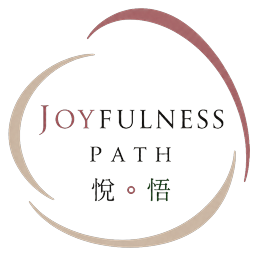

<footer class="r12-footer" role="contentinfo">
<div class="r12-footer-inner">
<div class="r12-footer-brand"><span>Joyfulness Path<br><small>with Winnie Lim 林曉怡</small></span></div>
<nav class="r12-footer-links" aria-label="條款及聯絡">
<a href="https://joyfulnesspath.com/terms/" target="_blank" rel="noopener noreferrer">活動條款</a>
<a href="https://joyfulnesspath.com/privacy/" target="_blank" rel="noopener noreferrer">私隱政策</a>
<a href="https://www.facebook.com/groups/joyfulnesspath31/" target="_blank" rel="noopener noreferrer">Facebook 群組</a>
<a href="mailto:winnie.joyfulness.path@gmail.com">聯絡主辦者</a>
</nav></div>
<p class="r12-footer-note">© 2026 Joyfulness Path with Winnie Lim 林曉怡。1 月 8–10 日課程日期已確認。具體安排及活動專屬條款須以正式公布為準。此版本為未上線預覽。</p>
</footer>
<div class="r12-fixed"><a href="#enroll" class="r12-cta">2027 / 1 / 8–10　查看報名安排 ↗</a></div>